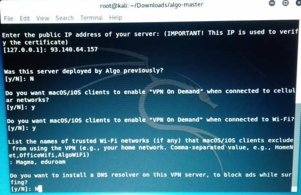

Postavljanje jednostavnih VPN-ova
Temu rezervirala:
- Josipa Kolaković
¸
Sadržaj |
Uvod
Tehnologije se razvijaju iz dana u dan. Neke od tih tehnologija omogućavaju stvaranje sigurnog tunela između sudionika u komunikaciji. Većina tvrtki danas posluju na više lokacija, a to zahtijeva siguran prijenos podataka i sigurnu komunikaciju između lokacija. Kako bismo taj problem riješili imamo VPN.
Virtualna privatna mreža (VPN) je tehnologija koja stvara sigurnu i šifriranu vezu preko manje sigurne mreže, kao što je internet. VPN tehnologija razvijena je kao način omogućavanja udaljenim korisnicima i podružnicama da sigurno pristupaju korporativnim aplikacijama i drugim resursima. Kako bi se osigurala sigurnost, podaci putuju kroz sigurne tunele i korisnici VPN-a moraju koristiti metode provjere autentičnosti - uključujući lozinke, tokene i druge jedinstvene metode identifikacije - kako bi pristupili VPN-u. On je danas jedna od češće korištenih tehnologija za osiguravanje privatnosti prilikom slanja podataka.
VPN mreža daje mogućnost spajanja LAN (engl. Local Area Network) mreža pojedinih lokacija, i stvaranje jedne jedinstvene WAN (engl. Wide Area Network) mreže.
Prednost korištenja sigurnog VPN-a osigurava odgovarajuću razinu sigurnosti povezanim sustavima kada to sama osnovna mrežna infrastruktura ne može pružiti. Opravdanje za korištenje VPN pristupa umjesto privatne mreže obično se svodi na trošak i izvedivost: Nije moguće imati privatnu mrežu - npr. Za prodavača putovanja ili je to previše skupo.
Kako bi bilo lakše shvatiti o čemu je riječ, zamislite da želite posjetiti stranicu www.pcchip.hr. Naime, prvo se spajate na server s kojim imate sigurnosni tunel odnosno do servera tvrtke koja nam omogućava VPN uslugu, te sa tog servera se poziva web stranica koju želimo posjetiti. Odgovor dolazi do servera te se kriptiranim putem/kanalom vraća do našeg računala. Tada dobivamo mogućnost putem web preglednika prikaz željenih web stranica. Davatelj naše Internetske usluge neće biti u mogućnosti vidjeti stranice koje posjećujemo, što se preuzima ili gleda. Biti će mu vidljivo samo kriptirani promet kojeg neće moći dekriptirati.
Na VPN izvedbu mogu utjecati razni čimbenici, među njima i brzina internetskih veza korisnika, vrste protokola koje davatelj internetskih usluga može koristiti i vrsta šifriranja koju koristi VPN. Izvedbu može utjecati i slaba kvaliteta usluge i uvjeti koji su izvan kontrole IT. [3]
Algo VPN
Algo VPN je skup mogućih skripti koje pojednostavljuju postavljanje osobnog IPSEC VPN-a. Ona koristi najsigurnije zadane postavke, funkcionira s običnim pružateljima (engl. cloud providers) i ne zahtijeva softver klijenta na većini uređaja.
Instalacija
Ovaj program podržan je samo na macOS/iOS i Lunux sustavu, na Microsoft Windows operacijskim sutavima ga nije moguće instalirati.
Najlakši način za postavljanje Algo poslužitelja je dopustiti da postavi novi virtualni stroj/virtualna mašina u okruženju kojem želite. U primjeru je korišten Kali-Linux.
Prvo je potrebno posjetiti stranicu https://github.com/trailofbits/algo i preuzeti Algo. Preuzeti dokument potreno je raspakirati. Nakon preuzimanja Alga, potrebno je pokrenuti Terminal u Kali-Linuxu. Potrebno je ući u algo-master direktorij koji je raspakiran ranije i ispisati naredbu:
sudo apt-get update && sudo apt-get install \
build-essential \ libssl-dev \ libffi-dev \ python-dev \ python-pip \ python-setuptools \ python-virtualenv -y
Kao što je prikazano na slici 1. nakon upisane naredbe pokreće se instalacija.
{kind=link}
Potom upišite sljedeću naredbu: python -m virtualenv env && source env/bin/activate && python -m pip install -U pip && python -m pip install -r requirements.txt
Nakon toga pokrenut će se drugi dio instalacije te će izgledati kao na slici 2.
{kind=link}
Posljednji korak je otvoriti raspakiranu algo-master mapu te otvoriti config.cfg te pod users dodati korisnike i spremiti promjene. S tim korakom instalacija Alga je završena. [1]
Primjer
Postava VPN-a je automatizirana. Potrebno je otvoriti Terminal te se locirati u ago-master datoteku. Potom pokrenuti naredbu: ./algo
Dobit ćemo pet mogućnosti pomoću kojih želimo postaviti VPN, one su prikazane na slici 3.
Ne morate odabrati samo jedan VPN pristupnik moguće je odabrati različite usluge. U ovom primjeru korištena je Ubuntu server.
Potrebno je odgovoriti na nekoliko pitanja i Algo će izgraditi VPN za vas.
Pitanja su:
1. Unesite IP adresu vašeg servera (localhost)
2. Kojeg korisnika trebamo koristiti za prijavu na server/poslužitelj (ako se koristi localhost ovo se onda može ignorirati i nastaviti dalje)
3. Unesite javnu IP adresu vašeg servera
4. Je li ovaj server/poslužitelj postavio Algo ranije?
5. Želite li da macOS/iOS klijenti omoguće „VPN na zahtijev“ engl. „VPN On Demand“ kada su povezani s mobilnim mrežama?
6. Želite li da macOS/iOS klijenti omoguće „VPN na zahtijev“ engl. „VPN On Demand“ kada su povezani na Wi-fi?
7. Navedite imena pouzdanih Wi-fi mreža (ako ih ima) koje macOS/iOS klijenti isključuju pri korištenju VPN-a. (Vaša kućna mreža, itd. Imena mreža odvoji zarezom)
8. Želite li instalirati DNS resolver na ovom VPN serveru/poslužitelju, kako bi blokirao oglase tijekom surfanja?
9. Želite li da svaki korisnik ima vlastiti račun engl. account za SSH tuneliranje?
10. Želite li primijeniti priključke za sigurnost operacijskog sustava na serveru?
11. Želite li da VPN podržava Windows 10 ili Linux Desktop klijente?
12. Želite li zadržati CA ključ?
{kind=link}
Navedena pitanja s odgovorima prikazani su na slikama 4, 5 i 6.

Nakon toga pokreće se postavljanje te se na kraju pojavi poruka za uspješno postavljanje Algo servera.
{kind=link}
{kind=link}
{kind=link}
Sshuttle
Sshuttle nije točno VPN, niti port za prosljeđivanje. Može biti oboje, ali niti jedno. Sshuttle je poput VPN-a, jer može prosljeđivati svaki priključak na cijeloj mreži, a ne samo portove koje odredite. Stoga, to omogućuje da koristite "prave" IP adrese svakog domaćina umjesto da lažirate brojeve portova na localhostu. S druge strane, način na koji to radi je više poput prosljeđivanja ssh portova od VPN-a. Uobičajeno, VPN prosljeđuje podatke jedan paket u isto vrijeme, ne brine se za pojedinačne veze; tj. to je "bez državljanstva" engl stateless s obzirom na promet. Sshuttle je suprotno od bez državljanstva; prati svaku pojedinu vezu. Sshuttle okuplja TCP tok na lokalnoj razini, višestruko ga multipleksira preko ssh sesije i rastavlja ga natrag u pakete na drugom kraju. Stoga nikada ne završava TCP-over-TCP. To je samo podatkovni nad-TCP koji je siguran. [2]
Instalacija
Na početku je potrebno pokrenuti virtualnu mašinu/stroj, potom se otvori Terminal.
U Terminalu upišemo naredbu: git clone https://github.com/sshuttle/sshuttle.git . Pri tome lociramo se u datoteku sshuttle i pokreno naredbu: ./setup.py install. Sshuttle je moguće instalirati i pomoću naredbe: sudo apt-get install sshuttle.
Primjer instalacije možete vidjeti na slici 7.
Ovaj program podržan je samo na macOS/iOS i Lunux sustavu, na Microsoft Windows operacijskim sustavima ga nije moguće instalirati.
{kind=link}
Primjer
Povezivanje s udaljenim sustavima pomoću sshuttle je prilično jednostavano.
Nakon što smo uspostavili sshuttle na virtualnoj mašini, otvorimo Terminal kako bismo uspostavili VPN.
https://www.unixmen.com/sshuttle-poor-mans-vpn-ssh/
Ukoliko želimo da se prosljeđuje sav promet potrebno je upisati naredbu: sudo sshuttle -r username@sshserver 0.0.0.0/0 .
Sshuttle –r je parametar koji specificira remote server.
Po defaultu sshuttle će automatski odabrati način korištenja. Prebacivanje s parametrom sshuttle -method.
Ako željelimo da se DNS upiti prosljeđuju putem DNS poslužitelja možemo upisati naredbu: sshuttle --dns -r korisničko ime @ sshserver 0/0 . Ovo koristimo kada se želi spriječiti lokalni mrežni napadi poput Firesheep i Friends.
Sshuttle omogućuje da se stvori VPN veza sa svoje virtialne mašine/stroja na bilo koji udaljeni poslužitelj na koji se možete povezati preko ssh, sve dok taj poslužitelj ima python 2.3 ili noviji. Za rad je potrebno imati root pristup na lokalnom računalu, ali možete imati normalni račun na poslužitelju.
Kada se pokrene, sshuttle stvara ssh sesiju poslužitelju navedenom u opciji -r. Ako je -r izostavljen, pokrenut će lokalno klijent i poslužitelj, što je ponekad korisno za testiranje.
Nakon povezivanja s udaljenim poslužiteljem, sshuttle prenosi izvorni kod (python) na daljinski kraj i izvršava ga tamo. Dakle, ne morate instalirati sshuttle na udaljenom poslužitelju, i nikada ne postoje sshuttle verzije sukoba između klijenta i poslužitelja.
Za razliku od većine VPN-ova, sshuttle prosljeđuje sesije, a ne pakete. To znači da koristi prozirne proxying jezgre (iptables REDIRECT pravila na Linuxu) kako bi uhvatio odlazne TCP sesije, a zatim stvara posve zasebne TCP sesije na izvornu destinaciju na drugom kraju tunela.
Prosljeđivanje na paketnoj razini (npr. Pomoću uređaja tun / tap na Linuxu) izgleda elegantno na početku, ali rezultira nekoliko problema, osobito tcp over tcp-a. Tcp protokol u osnovi ovisi o odbacivanju paketa kako bi se implementirao agoritam kontrole zagušenja; ako prođete tcp pakete preko tcp-baziranog tunela (kao što je ssh), unutarnji TCP paketi nikad neće biti ispušteni pa će unutarnja kontrola zagušenja tcp streama biti potpuno prekinuta i performanse će biti strašne. Dakle, VPN-ovi na bazi paketa (kao što su IPsec i openvpn) ne mogu koristiti šifrirane streamove kao što su ssh ili ssl na tcp-u i moraju implementirati vlastito enkripcije od nule, što je vrlo složeno i pogrešno je sklona. [4]
Za postavljanje imamo nekoliko istaknutih opcija:
subnets
Popis podmreža za usmjeravanje preko VPN-a, u obliku a.b.c.d [/ width] [port [-port]]. Neki primjeri su 1.2.3.4 (jedna IP adresa), 1.2.3.4/32 (ekvivalent 1.2.3.4), 1.2.3.0/24 (24-bitna podmreža, tj. Sa mrežnom maskom 255.255.255.0) i 0 / 0 ('samo usmjerite sve preko VPN-a'). Bilo koji od prethodnih primjera vrijedi i ako dodate priključak, tako da će 1.2.3.4:8000 samo tunelirati promet koji ima kao odredišni priključak 8000 od 1.2.3.4 i 1.2.3.0/24:8000-9000 promet tunela ide na bilo koju luku između 8000 i 9000 (uključivo) za sve IP adrese u 1.2.3.0/24 podmreži. Također je moguće koristiti naziv u kojem slučaju prva IP adresa koju rješava tijekom pokretanja bit će usmjerena preko VPN-a. Valjani su primjeri primjer.com, primjer.com:8000 i primjer.com:8000-9000.
--method [auto | nat | tproxy | pf]
Koju biste vatro zidnu metodu trebali koristiti? Za auto, sshuttle pokuša pogoditi odgovarajući način, ovisno o tome što može pronaći u PATH. Zadana vrijednost je automatska.
-H, -auto-hosts
Skeniranje udaljenih naziva hostova i ažuriranje lokalne / etc / hosts datoteke s odgovarajućim unosima sve dok je VPN otvoren. Ovo je ljepše od promjena postavki DNS sustava (/etc/resolv.conf), iz nekoliko razloga. Prvo se naziv računala dodaju bez naziva domena, tako da možete ssh tog poslužitelja bez brige ako se vaša lokalna domena podudara s udaljenim. Drugo, ako se istodobno prebacite na više VPN-a, istodobno je nemoguće koristiti više od jednog DNS poslužitelja, ali sshuttle pravilno spaja stavke / etc / hosts između svih pokretnih kopija. Treće, ako usmjeravate samo nekoliko subneta preko VPN-a, vjerojatno biste radije nastavili koristiti svoj lokalni DNS poslužitelj za sve ostalo.
-N, - auto-nets
Uz podmreže koje se nalaze na naredbenom retku, pitajte poslužitelja na kojem se podnaslovi smatra da bismo trebali putovati i automatski ih usmjeravati. Prijedlozi se automatski preuzimaju iz tablice usmjeravanja poslužitelja.
--dns
Snimite lokalne DNS zahtjeve i prosljeđujte na udaljenom DNS poslužitelju.
-r, --remote = [korisničko ime @] sshserver [: port]
Remote naziv hosta i opcionalno korisničko ime i broj ssh portova koji će se koristiti za povezivanje s udaljenim poslužiteljem. Na primjer, example.com, testuser@example.com, testuser@example.com: 2222 ili example.com:2244.
-v, - verbose
Ispišite više informacija o sesiji. Ova se opcija može koristiti više puta za povećanu verbalnost. Prema zadanim postavkama, sshuttle ispisuje samo poruke o pogrešci. [4]
Testiranje svih lokalnih veza bez korištenja ssh, napravila sam pomoću naredbe: sudo sshuttle –v 0/0.
Potom sam provjerila vezu s udaljenim poslužiteljem, s automatskim nazivom hosta i nagađanjem podmreže: sshuttle –vNHr primjer.org.
Izvedba je prikazana na slici 8.
{kind=link}
Algo - sshuttle
Alogo podržava samo IKEv2 s jakim kripto: AES-GCM, SHA2 i P-256. On generira Appleove profile za automatsko konfiguriranje iOS i MacOS uređaja. Isto tako uključuje helper skriptu za dodavanje i uklanjanje korisnika. Može blokirati oglase lokalnim DNS resolverom (po izboru). Postavlja ograničene SSH korisnike za tuneliranje prometa (po izboru). Moguće ga je instalirati na DigitalOcean, Amazon EC2, Microsoft Azure, Google Compute Engine ili vaš vlastiti poslužitelj.
Ono što Algo ne podržava je naslijeđene šifre ili protokole kao što su L2TP, IKEv1 ili RSA. On Ne instalira Tor, OpenVPN ili druge rizične poslužitelje. Potrebno je istaknuti kako ne ovisi o sigurnosti TLS-a, te ne zahtijeva softver klijenta na većini platformi. On ne tvrdi anonimnost ili izbjegavanje cenzure, niti nas štiti od FSB-a, MSS-s, DGSE-a ili FSM-a.
SShuttle je jedini program koji rješava sljedeće zajedničke slučajeve: stroj klijenta (ili usmjerivač) je Linux, MacOS, FreeBSD, OpenBSD ili pfSense, pruža pristup udaljenoj mreži putem ssh, nije potrebno imati administrativni pristup na udaljenoj mreži te nije moguće koristiti openssh's PermitTunnel značajku jer je onemogućen po defaultu na openssh poslužiteljima; plus to čini TCP-over-TCP.
Zaključak
Algo, osobni VPN poslužitelj koji je samostalno smješten i namijenjen je jednostavnoj implementaciji i sigurnosti. Algo automatski postavlja VPN uslugu na zahtjev u oblaku koji se ne dijeli s drugim korisnicima, oslanja se samo na suvremene protokole i šifre, a uključuje samo minimalni softver koji vam je potreban.
Sshuttleova jednostavnost proizlazi iz činjenice da može sigurno koristiti postojeći SSH šifrirani tunel bez izvođenja kaznene radnje. To čini tako da klijent na strani klijenta upravlja ulaznim tcp streamom, a kernel na strani poslužitelja upravlja izlaznim tcp streamom; nema potrebe da se kontrola zagušenja dijeli između dva odvojena strujanja, tako da je tunel temeljen na TCP-u u redu.
Literatura
1. GITHUB (2017) Algo VPN. Dostupno 10.1.2018. na https://github.com/trailofbits/algo
2. Unixmen.com (2017) sshuttle: A Poor man’s VPN Over SSH. Dostupno 20.1.2018. na https://www.unixmen.com/sshuttle-poor-mans-vpn-ssh/
3. PCCHIP (2016) VPN i tehnologija iza njega. Dostupno 27.1.2017. na http://pcchip.hr/softver/posao-i-financije/vpn-i-tehnologija-iza-njega/
4. sshuttle.readthedocs.io (2017) sshuttle. Dostupno 10.1.2018. na https://sshuttle.readthedocs.io/en/stable/changes.html